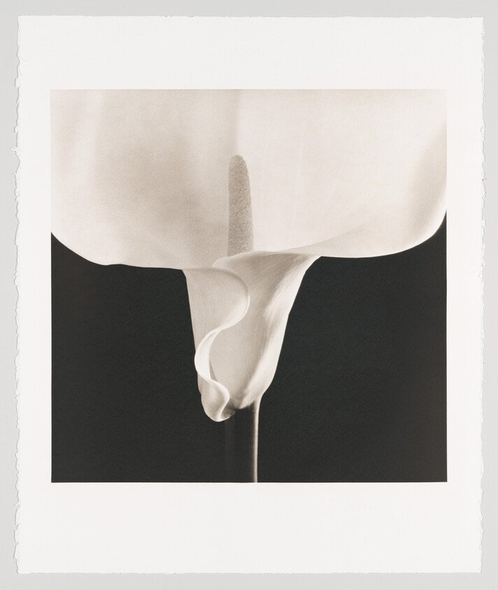

Calla Lily
Robert Mapplethorpe · 1988 · Platinum print · 47.8 × 48.3 cm (image) · Whitney Museum of American Art, New York
In copyright. Look and learn: shown for study, not for download.
Mapplethorpe made this platinum print in 1988, two years after he was diagnosed with AIDS. In July of that year the Whitney held his first major American museum retrospective, and he set up the foundation that now runs his estate; the foundation gave this print, number two of an edition of five, to the Whitney. He died in March 1989, at forty-two. In their last conversation he asked Patti Smith to write the introduction to his coming book of flower photographs.